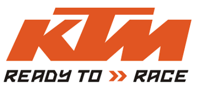

Marques
1.- Honda
Honda Motor és una empresa japonesa que fabrica cotxes.
És una empresa d'enginyeria i producció japonesa d'èxit. L'empresa és més coneguda pels seus cotxes i motocicletes, però també fa una gamma d'altres productes: camions, patinets, robots, avions, generadors, motors marins, equips de jardineria i tecnologia de mobilitat i aviació. A més, la filial de vehicles de luxe d'Honda a Amèrica del Nord es diu Acura.
Honda produeix més de 14 milions de motors de combustió interna anualment i és el fabricant de motors més gran del món. L'any 2004, la companyia va començar a produir motors dièsel.
Honda té la seu a Tòquio. Cotitza a la Borsa de Valors de Tòquio i la Borsa de Nova York, així com a Osaka, Nagoya, Sapporo, Kyoto, Fukuoka, Londres, París i Suïssa.
American Honda Motor Co. es troba a Torrance, Califòrnia, i la seu central canadenca (Honda Canada Inc.) es troba a Scarborough, Ontario
Soichiro Honda va ser un mecànic que va desenvolupar un nou disseny d'anell de pistó el 1938 mentre treballava a Art Shokai. Va intentar vendre els anells de pistons a Toyota, però Toyota no els va rebutjar com es creu àmpliament. Honda va construir una nova fàbrica per fabricar productes per a Toyota, però poc després, a la Segona Guerra Mundial, la fàbrica va quedar completament destruïda.
Els seus inicis
Soichiro Honda va crear una nova empresa amb les restes del mercat japonès reduït per la guerra, el seu país no tenia diners ni energia però necessitava un transport bàsic. Honda va començar a posar motors a les bicicletes, creant un mitjà de transport econòmic i eficient. El nom és Honda Giken Industrial Kabuki Club, que es pot traduir com a Honda Research Institute. Tot i la semblança del nom, el primer pis de la nova empresa és una cabana de troncs on Honda i els seus col·legues connecten el motor a la moto. El nom oficial d'Honda al Japó segueix sent el mateix en honor als esforços de Soichiro Honda. El 24 de setembre de 1948, la Honda Motor Company es va establir oficialment al Japó.
Honda va començar a construir una línia de scooters i motocicletes, i Soichiro Honda es va recuperar de les pèrdues de la guerra. La primera motocicleta venuda va ser una Honda A-Type de 1947, un any abans que la companyia s'establís oficialment. Equipat amb un motor de 98cc amb una potència d'uns 3 cavalls. Aquest model va ser seguit per més patinets als anys 50 amb gran èxit.
American Honda es va fundar el 1958, just un any després que Honda va llançar el seu primer model nord-americà a nivell mundial, el model Honda C100 Super Cub de 1959, que va vendre uns 50 milions d'unitats. A la dècada de 1970, Honda es va convertir en el fabricant de motocicletes més gran del món, i des d'aleshores no ha renunciat mai a aquest lloc.
Actualment la seva col·laboració més important és amb la empresa REPSOL
2.- Yamaha
Yamaha Motor Company, Inc. és una empresa japonesa amb seu a Iwata, Japó, i forma part de Yamaha Corporation, que fabrica embragatges, motocicletes, motos de neu, motors fora de borda, motos aquàtiques i motors de vehicles. Va ser fundada el 1955 després de la seva separació de l'empresa matriu Yamaha Corporation.
Història
Dirigida pel seu primer cap Genichi Kawakami, va entrar en producció el 1955 amb un model JA-1 de dos temps (una còpia de l'alemany DKW RT125), que va guanyar el tercer lloc en la competència d'Ascens al Monte Fuji.
Des de la dècada de 1970, Yamaha s'ha distingit per les motocicletes potents i lleugeres de l'època. Mentre que altres marques són exclusivament per a motos de turisme, Yamaha ha creat motos competitives per als usuaris del carrer que deixen grats records com ara la RD 350 o la RD 400 (Daytona) que encara avui les acompanyen.
3.- KTM

KTM és un fabricant de motocicletes austríac, fundat el 1992 però amb una fundació que data el 1934. El 1992, l'empresa es va separar de la seva
empresa matriu KTM a causa de problemes financers. KTM s'ha dividit en 4 empreses, totes les quals comparteixen la mateixa marca i ara tenen moltes més subsidiàries sota la mateixa marca. Tot i això, la motocicleta KTM-Sport s'associa sovint amb la marca KTM. KTM és coneguda per les seves motocicletes tot terreny, encara que en els darrers anys s'ha expandit a la producció de motocicletes de carretera, a més de desenvolupar cotxes esportius i bicicletes.
El 2019, el gegant asiàtic cfmoto, reconegut mundialment, va adquirir una participació del 51% a KTM R2R (una empresa de distribució de vehicles de baixa cilindrada a la Xina).
Història
El 1934, l'enginyer austríac Hans Tronkenpuls va establir una planta metal·lúrgica a Mattigofen. El 1937, va començar a vendre motocicletes DKW i automòbils Opel l'any següent. La seva botiga es coneixia com a Kraftfahrzeug Trunkenpolz Mattighofen però el nom no està registrat. Durant la Segona Guerra Mundial, la seva dona va adquirir una empresa que es desenvolupava principalment al camp de la reparació de motors dièsel. Després de la guerra, la demanda de treballs de reparació va caure dràsticament i Trunkenpolz va començar a pensar en la producció de les seves motocicletes. El prototip de la primera motocicleta R100 es va fabricar el 1951. Totes les parts de l'automòbil es fabriquen internament, excepte el motor Rotax, que és fabricat per Fichtel and Sachs.
El 1953, l'empresari Franco Breda es va convertir en el principal accionista de l'empresa, que més tard va passar a anomenar-se Kronriv i Tronkenbulls-Mattigofen. KTM va començar la producció en massa de la R100 el 1954. Amb només 20 empleats, es construïen tres motocicletes al dia. La companyia va guanyar el seu primer títol de carreres poc després amb el campionat de la classe 125 d'Àustria del 1954.
El 1955 es va desenvolupar el model Turisme 125cc.
4.- Kawasaki
Kawasaki és una corporació internacional amb seu a les ciutats japoneses de Chūō-ku (Kobe) i Minato (Tòquio).
La companyia pren el nom del seu fundador, Shozo Kawasaki, i no té connexió amb la ciutat de Kawasaki, (Kanagawa).
Fora de Kōbe, Japó, Kawasaki es coneix principalment per la producció de motocicletes i vehicles tot terreny, tot i que la companyia i les seves subsidiàries també fabriquen motos d'aigua, vaixells, plantes industrials, tractors, trens, petits motors i equipament aeroespacial ( incloent avions militars).
Història
El 1878, Shōzo Kawasaki a Tòquio va establir la drassana Kawasaki Tsukiji i des de llavors ha establert les bases per a la formació d'un futur imperi econòmic.
El 1901, Kawasaki va produir la primera màquina de vapor al Japó, abans de la Segona Guerra Mundial, va fer una important contribució al desenvolupament de la flota que eventualment serviria a la guerra al Pacífic. L'avió més famós produït per Kawasaki durant la Segona Guerra Mundial va ser el Kawasaki Ki-61 Heine.
Després de la guerra, Kawasaki va revisar la seva línia d'assemblatge per a la guerra i es va distanciar del tot de la indústria de les armes. Per primer cop va construir un motor de quatre temps de 148-150 cc. Gener de 1961, surt de fàbrica la primera motocicleta; Es diuen 125 B7.